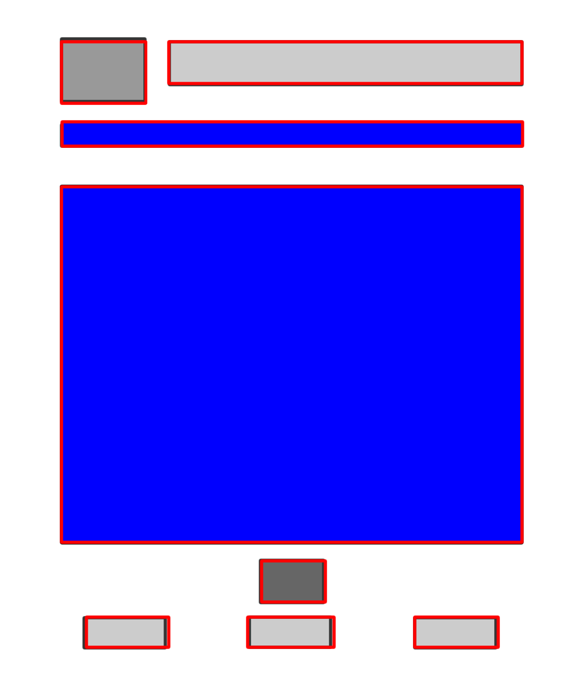

Creating templete for subpages
Things to cosider when creating the subpages:
Reviewing flowchart and success criteria of the website:
Most recent flowchart:

From the flowchart, I know that I would need to create 3 subpages for the website
Success Criteria:
- The website contain notes on kinetics
- The website has an interactive lab about kinetics
- The website has a summary about what students should have learned from the notes and the lab
- The website has a set of practice questions about kinetics
- The website has the answer key to the practice question
These are the things we need to make sure to show them on the subpages. For the templete, we need to make sure there's enough space to put the information.
We also wanted to remain consistancy with the homepage so we won't change the layout a lot.
Look and Feel
- message of the site
- To let the audience know they'll be able to learn and practice their skill on kinematics on the site
- theme
- science, classroom, learning
- fonts
- We choose comic sans since it is a more hand-writing style font, creating a feel for the audience of they have to put their hands on the work.
- background
- We choose a chalkboard doole image since a chalkboard would help the students to relate to classroom and learning, which is our theme. Also the dooles are related to the topics discussed in the site.
- essential element on each page
- home botton - for a convinient navigation through the site
- navigation bar - allows the audience to move from subpages to subpages easier
- title and logo of the site - to keep consistacy with the index page and let the audience know they are in the same website and therefore not distracted
Sitemap
- homepage
- Concept
- Application
- Conclusion
Ideas for tempelete

description and planning for storyboard
- This wireframe contains a navigation bar on the top of the page for the audience to link to other subpages on the site
- The audience would know which subpage they are on since the page title will be highlighted with a different color on the navigation bar
- The font used will be consistant throughtout the pages to avoid distractions
- A homepage botton is placed at the bottom of the content, so the audience can go back to the homepage, if desired, after reading the content of the page without scrolling back up to the top fo the page
- The placement and the color of the icon and the title is consistant with the homepage
Making Tempelete for subpages
This is a wireframe for the subpages with editable region labeled blue
Creating Tempelete using Dreamweaver
This is the tempelete created with dreamwearver
We changed our idea about the editable region, we decided the navigation bar should be a little bit different for each pages. So, both the navigation bar and the big square in the middle is editable
We also decided to remove one bottom navigation botton as it is not essential for the page
self-review notes for the first test run of the website
- links doesn't work - find the problem
- Problem solved: folders and files arrangement. The links that I created earlier actually links to another folder therefore it won't work.
- homepage - the word "application" went over the "2" image and blends in with the background
- Problem solved: hyperlinking the text changes it's color therefore creates a contrast from the background